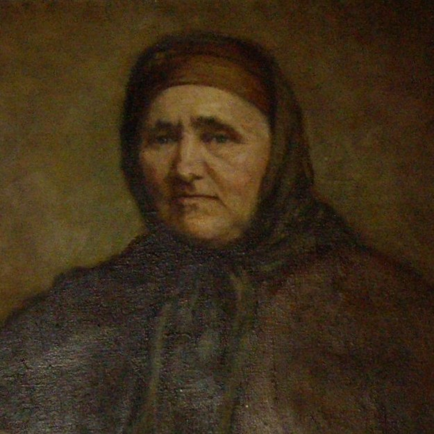
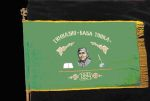
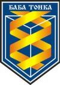
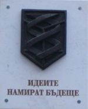
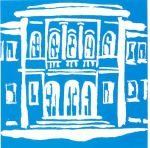
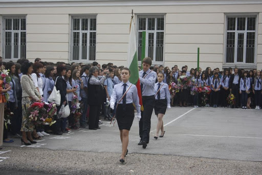
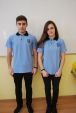
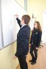
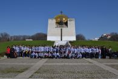
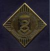

Патрон на гимназиятаТонка Тихова Обретенова (Баба Тонка) е българска националреволюционерка и героиня
|

Четирима сина загубих! Двамата са в гроба, а другите полуживи. Но още четирима да имах, пак щях да ги накарам да носят българското знаме със златния лъв. |
Знаме на гимназиятаНа 22.03.1938 г. училището се сдобива със знаме. Знамето, което се използва при ритуалитее точно копие на първото, което се съхранява в музея на гимназията. |
 |
Лого нa гимназиятаЛогото е изработено от Евелина Атанасова (завършила МГ през 1975 г.) и прието отПедагогическия съвет на 05.07.1996 г. |
 |
Девиз на гимназиятаЗа приобщаване към традициите на училището с активното участие на ученицитебе избран девиз на гимназията, който бе изписан върху мраморна плоча. |
 “Идеите намират бъдеще” |
Марш на гимназиятаТекст и музика: Нели Рашкова, учител по музика от 1964 до 1968 г. |
 Потомци сме на Баба Тонка, боркиня смела и любим патрон, примерът и жив за нас ще бъде, ще продължим по пътя и напред. Със гордо вдигнати чела и с плам в младежки си сърца ний крачим смело, бодро до един, вървим по пътя на дедите си. Отличници в училище сме днеска, а утре в мини, фабрики, заводи ще влеем наще млади мощни сили, ще продължим живота си щастлив. |
Химн на гимназиятаТекст: Стела Моцинова, учител по химияМузика: Александър Владигеров, 1969 г. |

Нека екне нашият марш |
Униформа на гимназията |
  |
Патронен празник на гимназията22ри март |
 |
Плакет от гимназиятаВръчва се плакет на първенец на випуска |
 |
Симо Георгиев Александров, 12в, 4/20/2020